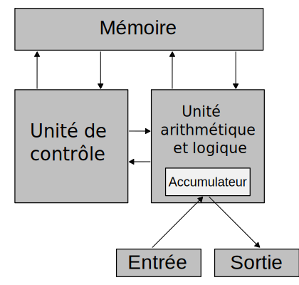

John von Neumann est un mathématicien et physicien d'origine hongroise, reconnu pour ses contributions dans le domaine des mathématiques appliquées et de l'informatique. Il est célèbre pour avoir formulé l'architecture de l'ordinateur moderne, qui porte son nom, où un programme et ses données sont stockés dans la même mémoire. Ce concept est toujours utilisé dans les ordinateurs contemporains.
